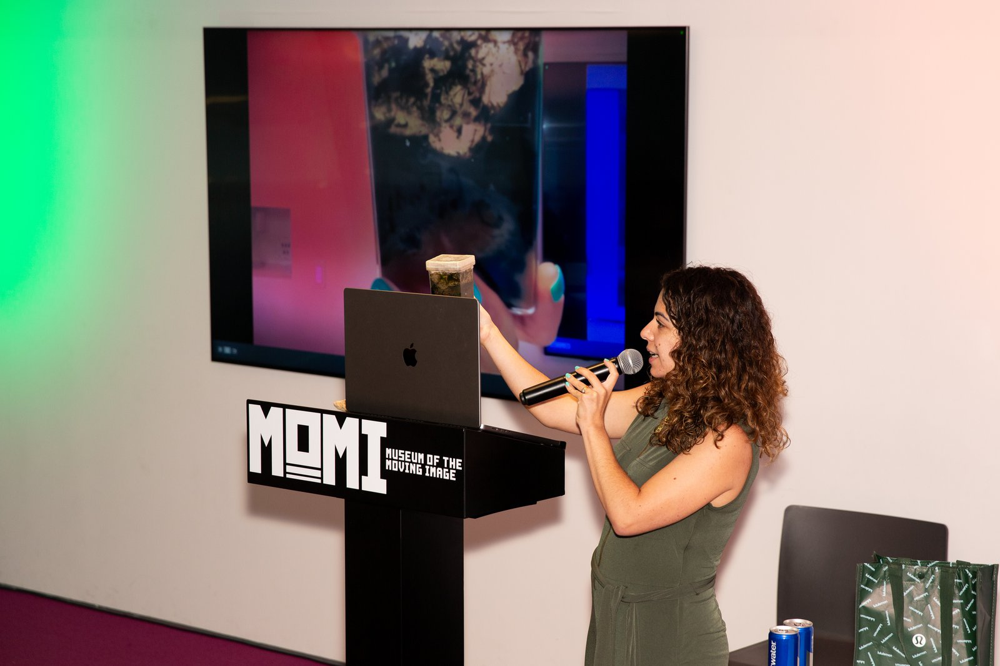

Outreach & Media
Public Talks & Events
-
UpcomingBiomarker Bookmarks
With Dr. Sarah Hurley’s lab at Lamont, we’re running a hands-on booth where visitors use chromatography to separate plant pigments and turn the result into a laminated bookmark. Those pigments are biomarkers: the clues organisms leave behind of their existence, and exactly what we search for on Mars. Free and open to the public.
-
Life on Mars?
As the astrobiologist in this live science-and-cinema variety show, I paired Martian movie scenes with the real hunt for alien life. We use the same tools (biomarkers, lipids, carbon isotopes) to look for life on the early Earth and on Mars. Using recent imagery from NASA’s Perseverance rover, a living microbial mat, and a fossilized rock, I showed the biological “fingerprints” scientists look for in Martian rocks.
-
If a Tree Feels in a Forest: tree-ring science at Pioneer Works
With Dr. Caroline Leland and Dr. Mukund Rao of the Lamont-Doherty Tree-Ring Lab, I presented a hands-on display of tree cross sections and cores at two events, showing visitors how to read the history recorded in tree rings. At Second Sundays, a Baruch student also presented our dendroarchaeology poster on timbers from an early-1900s Harlem building.
-
From Mars to the Hudson River
This talk for an adult audience, co-hosted by Hudson River Park and the Secret Science Club, connected my astrobiology research with my oyster-reef work in the Park. I shared the bill with astrophysicist and folklorist Dr. Moiya McTier. I also brought live microbial mats and microscopes so guests could see these communities up close.
-
Microbial mats and oyster recruitment in the Hudson River
A short research update for Park staff and regional science partners on our Park-supported work: how microbial mats on reef balls at Gansevoort Peninsula may affect where young oysters settle and survive.
-
Microscope table at Release of the Fishes
At the Park’s end-of-season celebration for families, I brought microscopes and living specimens to help people see what microbial “life” can look like.
-
Faculty panelist, Symplifying STEM Symposium
I spoke with prospective undergraduates, both high school and transfer students, about what research at Baruch can look like.

Community & K–12 Outreach
-
“My life as an astrobiologist”: 6th-grade classroom visit
I spoke to about 150 6th graders about my life as an astrobiologist and the search for life on Mars, closing out their science unit on Mars.
-
Harvard Museum of Natural History Public School Outreach
I introduced students and teachers to Earth science research through the museum’s public school outreach. I designed and ran four hands-on classroom science projects for 5th graders from Quincy Middle School and a week-long “science week” project for 8th graders from the Worcester East Middle School STEM Academy. I also led a two-hour professional development seminar on Earth science research for visiting elementary school teachers.
-
High school summer research program
As a member of the department’s Diversity, Inclusion and Belonging Committee, I helped set up a high school summer research program that connected students from underserved communities to paid summer research jobs in Earth and Planetary Sciences.
Media & Features
-
Hudson River Park Visiting Scholars Program
Our “Microbes & Oysters” project is featured among the Park’s CUNY Research Alliance Scholar projects. The final report, Microbial ecology and oyster recruitment: chemical and taxonomic properties of microbial mats and effects on reef ball success, is public (March 2026).
-
“Student Success: Student wins Columbia SPS CUNY Fellowship”
A feature on a former lab member who worked with me on marine cyanobacteria. “It was a joy to have her in the lab and I’m certain she’ll do amazing things!”